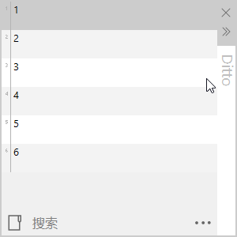
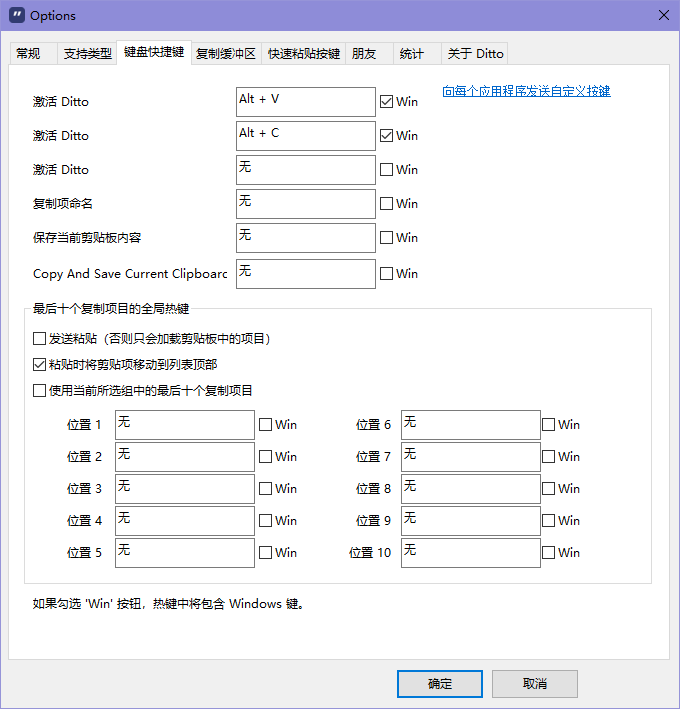

什么是Ditto？
Ditto 是一个 Windows 剪贴板扩展程序。它能将复制过的内容存在自己数据库中，以便稍候使用。
单从保存历史复制内容功能来说，Win10 系统本身也能做到，【WIN】 + 【V】快捷键即可唤出系统自带的剪贴板列表。不过，Ditto 功能不仅限于剪贴板历史，还有很多其他强大的功能，这些才应该是使用 Ditto 的原因。
安装及入门
可以从 GitHub 下载自己所需的发布版本，或者使用 scoop 等应用管理工具安装。
全局快捷键配置
启动 Ditto 后，使用 【Ctrl】+【C】 复制内容，默认该内容会保存在 Ditto 剪贴项列表中。使用 Ditto 默认全局快捷键 【Ctrl】+【`】可以激活它，就可以从列表中选择想要粘贴的内容。如下：

如果你同笔者一样使用较多类似 Ditto 的“效率类工具”，那么，很可能会意识到，全局快捷键也是一种稀缺资源。
Ditto 使用过程中很可能面对这样一个尴尬场景，其默认的激活快捷键已被其他工具占用了。
好在 Ditto 可以通过自定义全局快捷键来活，从而避免快捷键占用问题。（配置见下图）
Ditto 可以同时设置 3 个激活快捷键，这可以有效避免某个激活快捷键被某个应用程序占用。
更强大的是，Ditto 的快捷键可以包含【Win】键（只需要勾选 Win 复选框即可），这可以帮助我们设置一个几乎不可能被占用的快捷键。比如，笔者一般设置【Alt】+【Win】+【V】和【Alt】+【Win】+【C】两个快捷键，还从来没有被任何程序占用过。

粘贴
话说回来，当我们使用全局快捷键激活 Ditto 后，可以点击【Esc】关闭窗口，也可以通过【↑】【↓】方向键移动光标选择要粘贴的条目，选中后直接【Enter】粘贴即可。当然，使用【Shift】+【Enter】可以直接粘贴无格式文本。
查看条目
鉴于 Ditto 窗口空间有限，所以条目内容通常看不完全，图片等也只有缩略图……想要查看完整的条目内容，可以点击【F3】查看当前选中的条目。
小结
综上所述，一个最简单的操作流程应该大致是这样：
- 【Ctrl】+【`】（或自定义的快捷键）激活 Ditto 窗口
- 【↑】【↓】方向键移动选择粘贴条目
- 【F3】查看当前选中的条目完整内容（可选）
- 【Enter】或【Shift】+【Enter】粘贴